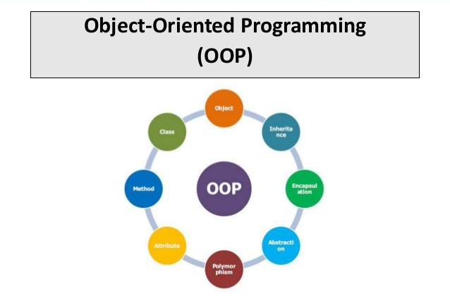

Java
Java programming language was originally developed by Sun Microsystems which was initiated by James Gosling and released in 1995 as core component of Sun Microsystems' Java platform (Java 1.0 [J2SE]).
The latest release of the Java Standard Edition is Java SE 8. With the advancement of Java and its widespread popularity, multiple configurations were built to suit various types of platforms. For example: J2EE for Enterprise Applications, J2ME for Mobile Applications.
The new J2 versions were renamed as Java SE, Java EE, and Java ME respectively. Java is guaranteed to be Write Once, Run Anywhere.
JAVA FEATURES
Java is simple, it is easy to read and write. Java is an excellent teaching language, and an excellent choice with which to learn programming.many features of c and c++ are either redundant of sources of unreliable code are not part of java. for example java doesnt use pointers ,preprocessor header files ,goto statement and many others.it also eliminates operator overloading and multiple inheritance. the language is small so it's easy to become fluent. Java is portable because there is no platform dependent concept in java. It can run on different platform without making any change to the source code.java ensures portability by two ways : firstly java compiler generates bytecode instructions that are can be implemented on any machine. secondly,the size of the primitive data types are machine independent. One of the key feature of Java that makes it different from other programming languages is architectural neutral (or platform independent). This means that the programs written on one platform can run on any other platform without having to rewrite or recompile them. In other words, it follows 'Write-once-run-anywhere' approach. Java programs are compiled into byte-code format which does not depend on any machine architecture but can be easily translated into a specific machine by a Java Virtual Machine (JVM) for that machine. This is a significant advantage when developing applets or applications that are downloaded from the Internet and are needed to run on different systems.  We Know that is purely OOP Language that is all the Code of the java Language is Written into the classes and Objects So For This feature java is Most Popular Language because it also Supports Code Reusability, Maintainability etc.  Multithreading means handling multiple tasks simultaneously.This means we need not wait for application to finish one task before beginning the another task.Eg:we listen to audio clip at the same time download an application from another distant computer.This features greatly improves the interactive performance of graphical applications. Java enables High performance by introducing JIT- Just In Time compiler , JIT helps the compiler to compile the code On demand basis i.e which ever method is called only that method block will get compiled making compilation fast and time-efficient. Java has Dynamic and Extensible Code Means With the Help of OOPS java Provides Inheritance and With the Help of Inheritance we Reuse the Code that is Pre-defined and Also uses all the built in Functions of java and Classes. Java is a distributed language which means that the program can be design to run on computer networks. Java provides an extensive library of classes for communicating ,using TCP/IP protocols such as HTTP and FTP. This makes creating network connections much easier than in C/C++. You can read and write objects on the remote sites via URL with the same ease that programmers are used to when read and write data from and to a file. This helps the programmers at remote locations to work together on the same project. Bytecode is the key that allows java to solve both the security and portability problems. the output of java compiler isn't directly executable machine code rather its byte code.the byte code also called virual machine code is converted by interpreter to machine code. since interpreter is different for different machine the output is also different. |
|

INTRODUCTION HTML TAGS BASIC TAGS FORM FRAME LIST MISCELLANEOUS TABLE CSS STYLE SHEETS TYPE SELECTORS TYPE JAVA